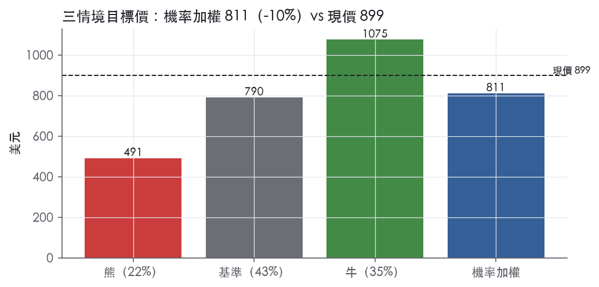
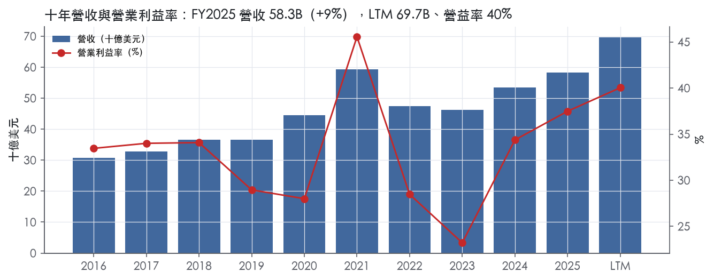
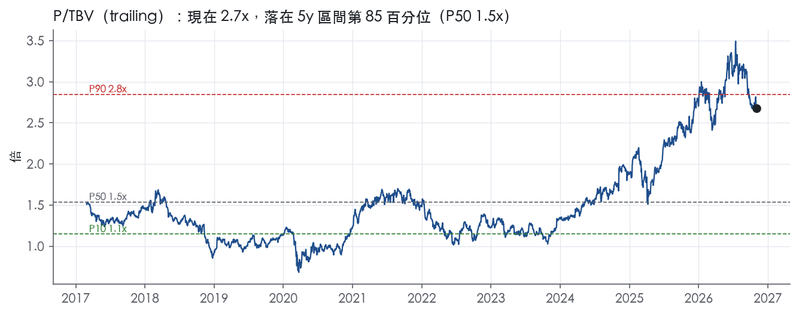
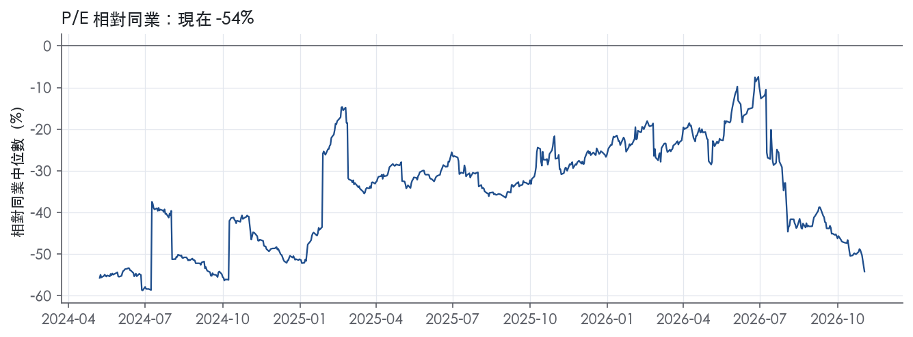
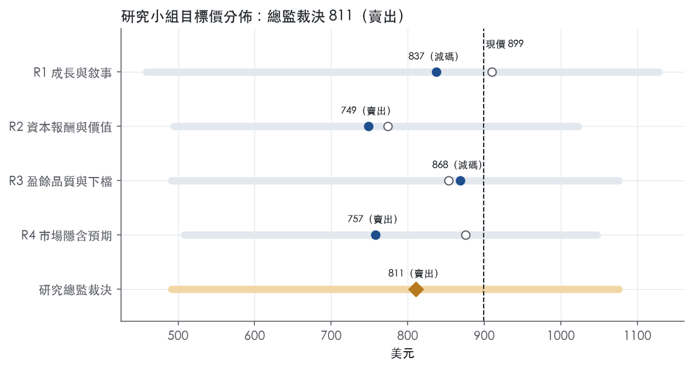
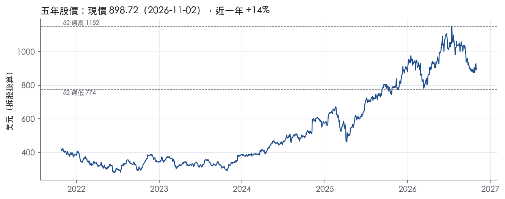

評等總表 › 金融 › GS
ROTCE 回 19%、P/TBV 回 2.2x，看空｜評等 賣出｜目標價 811
| 報告日 | 評等 | 目標價 | 當時股價 | 超額報酬 |
|---|---|---|---|---|
| 2026-11-02 | 賣出 | 811 | 899 | -17.7% |
| 2026-10-09 | 減碼 | 849 | 895 | -13.4% |
| 快評 | 動作 | 結論 |
|---|---|---|
| 2026-10-13 | 維持 | 營收略低於預測，看空論點成立，維持減碼 |
| 評等 | 賣出（邊界，鄰近減碼） |
| 12 個月目標價 | 811 美元 |
| 現價 | 898.72 美元（2026-11-02） |
| 預期報酬 | 股價 -9.8%＋股息 2.0%＝總報酬 -7.8%；同業籃門檻 9.9%，超額 -17.7% |
| 估值方法 | P/TBV 2.2x，套在一年後的有形淨值 |
| 三情境 | 熊 491／基準 790／牛 1075 |
| 研究流程 | 四位研究員兩輪辯論＋研究總監裁決 |
| 資料來源 | SEC EDGAR XBRL、Tiingo、FRED（全免費） |
ROTCE 回 19%、P/TBV 回 2.2x，看空（研究總監裁決，四位研究員兩輪辯論後）
評等 賣出（邊界，鄰近減碼）｜12 個月目標價 811 美元（總監三情境機率加權 824 與研究員中位數 797 各半）｜現價 898.72（2026-11-02）
預期報酬：股價 -9.8%＋股息 2.0%＝總報酬 -7.8%。同業籃門檻 9.9%，超額 -17.7%，離減碼的分界不到三個百分點，屬邊界評等（落在其他級距的機率約二成）。
估值方法：P/TBV 2.2x，套在一年後的有形淨值。三情境：熊 491（22%）／基準 790（43%）／牛 1075（35%）。
什麼會讓研究總監改變看法：4Q26 backlog 回升且 1Q27、2Q27 ROTCE 連兩季 ≥20%、效率比 <60%：正常化 ROTCE 上修到 21%、倍數 2.5x、轉中性。4Q26 提列再高於 368M 且 1Q27 營收年減：正常化 ROTCE 壓到 17%、倍數 2.0x、熊機率上調。
| 過去四季（實際，FY2026Q3） | 未來四季 | 第 5–8 季 | 第 9–12 季 | |
|---|---|---|---|---|
| 淨營收（B） | 69.7B | 73.9B | 76.8B | 79.9B |
| 淨營收成長 | 18.7% | 6.0% | 4.0% | 4.0% |
| 稅前利益率 | 40.0% | 37.0% | 36.0% | 36.0% |
| EPS（美元） | 70.08 | 69.56 | 72.20 | 77.01 |
| EPS 成長 | 41.3% | -0.7% | 3.8% | 6.7% |
| 每股股息（美元） | 18.00 | 18.00 | 18.00 | 18.00 |
| ROTCE | 21.1% | 21.3% | 21.5% | 22.1% |
| 每股有形淨值（美元） | 349.71 | 359.31 | 370.10 | 384.47 |
| P/E（現價） | 12.8x | 12.9x | 12.4x | 11.7x |
| P/TBV（現價） | 2.6x | 2.5x | 2.4x | 2.3x |
| 股息殖利率（現價） | 2.0% | 2.0% | 2.0% | 2.0% |
過去四季為申報數字；預測為研究總監的假設、程式計算。倍數與殖利率都用現價計算，用來看現價對應各期獲利的高低。
| 項目 | 上次（2026-10-12） | 這次（2026-11-03） | 變動 |
|---|---|---|---|
| 評等 | 減碼 | 賣出 | 變動 |
| 機率加權目標價（美元） | 849 | 811 | -4.5% |
| 超額報酬 | -13.4% | -17.7% | -4.3 pp |
| 目標倍數 | 2.2x | 2.2x | — |
| 未來四季營收成長 | 7.0% | 6.0% | -1.0 pp |
| 未來四季營益率 | 37.0% | 37.0% | +0.0 pp |
| 未來四季 EPS（美元） | 72.87 | 69.56 | -4.5% |
| 熊／基準／牛機率 | 24／37／39 | 22／43／35 | — |
程式計算；「未來四季」各自從當次報告的資料起點算。研究總監逐點說明見第八章「與上次報告比較」。
| 情境 | 機率（歷史） | 故事 | 未來四季營收成長 | 第 5–8 季稅前利益率 | 倍數 | 目標價 | 股價漲跌 |
|---|---|---|---|---|---|---|---|
| 熊 | 22%（16%） | 風險表第 1、2、4 條：做市收入反轉、backlog 續降、批發放款減損擴大，走本行下行情境（利差 2.30、失業率 5.1），營益率回 FY2022 水準，倍數回 5y P50 1.5x | -12.0% | 30.0% | 1.5x | 491 | -45.3% |
| 基準 | 43%（44%） | GBM 自 2Q26 高點回落、2027 年營收對紀錄基期持平、提列正常化，ROTCE 回到 19% 穿越週期水準，倍數由 2.7x 回公式值 2.2x | 6.0% | 36.0% | 2.2x | 790 | -12.0% |
| 牛 | 35%（40%） | 4Q26 backlog 回升、Equities 融資與 AWM 管理費證明為結構性，ROTCE 守在約 23%，市場按上次報告 23.0%→2.9x 的公式值定價 | 10.0% | 41.0% | 2.9x | 1075 | 19.6% |
目標價由程式依研究總監的驅動與倍數計算；機率由研究總監給定。括號內是歷史頻率：把這檔股票過去十年 12 個月報酬的波動形狀，置中在基準情境，結果落在各情境附近的比例。

四位研究員用不同方法各自估值，回應研究總監的質疑後交出第二輪，最後由總監逐點裁決。各研究員的主張見第七章，裁決理由見第八章，完整論證見《研究底稿》。
| 立場（一輪→二輪） | 加權目標價（一輪→二輪） | 評等（一輪→二輪） | 第二輪倍數 | 熊～牛目標價 | |
|---|---|---|---|---|---|
| R1 成長與敘事 | 中性→看空 | 909→837 | 減碼→減碼 | 2.2x | 459～1128 |
| R2 資本報酬與價值 | 看空→看空 | 774→749 | 賣出→賣出 | 2.0x | 494～1023 |
| R3 盈餘品質與下檔 | 中性→看空 | 853→868 | 減碼→減碼 | 2.4x | 491～1075 |
| R4 市場隱含預期 | 看空→看空 | 875→757 | 減碼→賣出 | 2.0x | 508～1047 |
| 研究總監裁決 | 看空 | 811 | 賣出 | 2.2x | 491～1075 |
目標價由程式依各自的驅動與倍數計算；評等＝機率加權總報酬 − 同業籃門檻。
Goldman Sachs 是一家向企業、金融機構、政府與個人提供廣泛金融服務的全球領先金融機構¹。公司是一家由聯準會（FRB）監管的銀行控股公司（BHC）及金融控股公司（FHC），旗下美國存款機構子公司為 Goldman Sachs Bank USA¹。公司服務對象包括需要籌資、併購、避險的機構客戶，以及透過資產與財富管理業務服務的機構與個人投資者¹。本質上這是一家以做市、承銷、顧問與資產管理為核心引擎的投資銀行控股公司，資產負債表規模巨大但不是傳統存貸銀行。截至 2026Q3，LTM 營收 69.70B、LTM GAAP 稀釋 EPS 70.08，trailing P/E 12.8x、P/TBV 2.7x。
公司管理並揭露三大業務分部：Global Banking & Markets（GBM）、Asset & Wealth Management（AWM）、Platform Solutions¹。GBM 涵蓋投資銀行手續費（顧問、股權與債權承銷）、FICC 做市與融資、Equities 做市與融資，以及關係放款、併購融資與交易銀行業務¹。從 3Q26 數字看，GBM 淨營收 13,458M，其中投資銀行手續費 3,224M（顧問 1,654M、股權承銷 666M、債權承銷 904M）、FICC 3,471M（做市 2,264M、融資 1,207M）、Equities 6,441M（做市 3,076M、融資 3,365M）、Other 322M²，是三大分部中規模最大、波動也最大的引擎。
AWM 靠管理及其他費用、激勵費、私人銀行與放款、投資四類收入¹。3Q26 AWM 淨營收 5,051M，管理及其他費用 3,587M 佔逾七成，激勵費 587M、私人銀行與放款 827M、投資僅 50M²；管理費收入主要隨平均受管理資產規模波動²。
Platform Solutions 幾乎全部收入來自發行 Apple Card 信用卡及吸收相關存款，以及已退出業務的餘留影響¹。2025 年 12 月公司已簽約將 Apple Card 專案移轉給另一發卡機構，過渡期約 24 個月，同年已出售通用汽車（GM）信用卡專案¹。3Q26 該分部淨營收僅 170M，年減 72%，主要反映 Apple Card 貸款組合（已於 2025Q4 轉列待售）之減記²——這個分部對公司整體營收貢獻已微不足道，本質上是消費金融退場的尾巴。10-K 未揭露三大分部佔整體營收的精確固定比例表，僅可由季度數字反推 GBM 為最大宗。
客戶群以公私部門機構為主，包括企業、政府、州與地方政府，GBM 致力與這些客戶建立長期關係，顧問與承銷業務通常是初始接觸點¹。AWM 服務機構與個人客戶，個人客戶多透過第三方分銷網路接觸公司產品，並為超高淨值客戶提供財富顧問服務¹。地區分布上，截至 2025 年 12 月，公司員工總數 47,400 人，在逾 35 個國家設有辦公室，50% 員工駐美洲、20% 駐歐非中東（EMEA）、30% 駐亞洲¹。公司透過 Marquee 平台提供機構投資人市場情報、風險分析與跨資產類別交易執行，全球研究團隊覆蓋約 3,000 家公司與約 50 個國家經濟體¹。整體看，GS 的客戶基礎高度機構化、全球化，零售通路僅限於高淨值財富管理與正在退場的 Apple Card 消費金融。
FY2025Q4（截至 2025-12-31）營收 13.45B，年減 3.0%，營益率 43.5%。
FY2026Q1（截至 2026-03-31）營收 17.23B，年增 14.4%。
2Q26（截至 2026-06-30）淨營收 20.34B，較 2025 年同期高出 39%、較 1Q26 高出 18%，主因 GBM 淨營收大幅成長³。GBM 淨營收 15.52B，年增 53%，投資銀行手續費 3.40B、年增 55%，主要受股權與債權承銷顯著增加推動³；FICC 淨營收 4.59B、年增 32%；Equities 淨營收 7.42B、年增 72%³。AWM 淨營收 4.60B，年增 20%³。公司當季將季度股息自每股 4.50 美元上調至 5.00 美元，宣布於 3Q26 生效³；當季回饋股東資本 5.36B，含 4.00B 股票回購與 1.36B 股息³。效率比（前半年累計）58.8%，優於去年同期 62.0%³。
3Q26（截至 2026-09-30）淨營收 18.68B，較去年同期高 23%、但較 2Q26 低 8%，主因 GBM 淨營收顯著增加但不及 2Q26 水準²。GBM 淨營收 13.46B，年增 32%；FICC 淨營收 3.47B 基本持平；Equities 淨營收 6.44B，年增 72%，主要受做市與融資業務推動²。AWM 淨營收 5.05B，年增 14%²。淨利 5.29B，EPS 17.01 美元，較 2Q26 的 20.98 美元下滑²。公司宣布 4Q26 每股股息維持 5.00 美元²；投資銀行手續費待執行量（backlog）較 2Q26 末及 2025 年末皆略減²——這是觀察未來顧問與承銷動能的關鍵先行指標。前九個月效率比降至 59.4%（去年同期 62.1%），年化 ROE 20.7%²。公司未在新聞稿中給出次季明確財務指引數字，僅點出 backlog 走勢。
公司的核心戰略敘事是「One Goldman Sachs」，目標是以更一致、更完整、更有效率的方式將全套服務與專業能力提供給客戶，跨業務與產品線整合銷售¹。在消費金融領域，公司自 2023 年起持續收斂消費相關業務，Apple Card 專案移轉完成後將實質完成此項聚焦收斂¹。在永續金融方面，公司 2019 年宣布在 2030 年初前投入 7,500 億美元（750 billion）於永續融資、投資與顧問活動的目標，並已達成¹；策略聚焦「氣候轉型」與「包容性成長」兩大主軸，透過永續金融小組（Sustainable Finance Group）驅動¹。在人才與全球布局上，公司強調策略地點建設（如班加羅爾、鹽湖城、達拉斯、新加坡、華沙等），45% 員工駐於策略地點，以打造特定能力的卓越中心¹。
公司管理層在 2Q26、3Q26 法說材料中反覆強調 GBM（尤其 Equities 與承銷）動能是驅動營收成長的主引擎，AWM 則靠資產規模擴張帶動管理費穩定成長³,²。整體而言，GS 正把 Platform Solutions 這塊消費金融包袱出清，資本與敘事全面回到機構導向的投行、做市與財富管理三引擎。股東回饋力度（股息連續上調、持續回購）顯示管理層對資本生成能力有信心，但 3Q26 investment banking backlog 走弱值得後續追蹤，是判斷下一季 GBM 動能能否延續的關鍵變數。LTM FCF 為負 39.98B主要反映銀行類業務資產負債表擴張特性，不宜套用一般企業的自由現金流邏輯解讀。

Goldman Sachs 的護城河評級為窄，趨勢穩定。我們有把握未來 5 年 ROE 平均高於資本成本，但沒有把握撐到 10 年以上，因為十年數據顯示的超額報酬幅度小，而且不連續。優勢集中在兩處：投行顧問與股權承銷的品牌地位，以及機構客戶在做市、主經紀與 Marquee 平台上的整合黏著度；交易與資管端則面對公司自己承認的價格競爭。
優勢來源只有無形資產與轉換成本兩類；成本優勢、網路效應、效率規模沒有足夠證據，不列。
無形資產（品牌與聲譽）：公司表示多年來在顧問服務居領導地位，尤其協助客戶執行需要跨境結構安排的大型複雜交易¹。公司經常取得大型複雜交易的委任，多年來在全球普通股公開發行與全球 IPO 居領先位置¹。公司列出的競爭要素包含交易執行、客戶體驗、產品與服務、創新、聲譽與價格¹。大型併購與 IPO 的發行人對交易失敗的代價極度敏感，願意為頂級聲譽付費，這是 GS 最硬的一塊優勢。截至 2025 年 12 月，管理委員會成員平均年資約 23 年，近 45% 的合夥人為校園招募¹。這代表文化傳承在內部完成，品牌不依賴少數明星銀行家。
轉換成本（機構客戶整合）：GBM 以顧問與承銷作為客戶的初始接觸點，目標是把公司全部資源無縫提供給機構客戶¹。公司與客戶之間的連結大量建立在 Marquee 等技術平台上，平台提供市場情報、風險分析、專有數據與跨資產交易執行¹。Prime financing 提供以證券或現金擔保的保證金融資，並提供融券服務¹。避險基金把融資、融券、執行與風險分析綁在同一家主經紀商之後，換家要移轉抵押品、重接系統，轉換成本確實存在。不過大型客戶普遍同時使用多家主經紀商，所以這項轉換成本只屬中等強度。
數字只支撐窄護城河，不支撐寬護城河。銀行的 ROIC 分母混入營運性負債，量化底稿改用 ROE 檢驗，我們採用這個口徑。ROE 十年平均 11.2%，資本成本代理值 9.9%，兩者差距僅 1.3%。ROE 有資料的 9 年中只有 5 年高於資本成本，最低 5.1%、最高 21.0%、標準差 4.3%。稅前利益率十年平均 32.8%、標準差 5.8%，區間在 23.2% 到 45.6%。淨營收成長的標準差為 14.4%，最差一年為 -20.2%。這組數字和寬護城河的條件直接衝突：寬護城河應該看到長期穩定的超額報酬，GS 的超額報酬薄，而且隨資本市場週期大幅起伏。
我們仍維持窄、不下修為無，理由有二。第一，近三季 ROTCE 為 21.3%、25.5%、20.3%，最新 ROE 13.9%；消費金融退場後，資本正回到報酬較高的機構業務。第二，ROE 低於資本成本的年份落在發行與交易景氣低谷，品牌業務的市場地位並未在低谷中流失，問題出在週期，不是優勢消失。但必須承認，十年平均只比門檻高 1.3%，這個評級落在窄與無的邊界，不是穩居窄。
最大的侵蝕力是交易與資管業務的價格壓縮，而且公司自己預期這個壓力會延續。電子交易量上升壓低了交易佣金，公司認為低佣金趨勢將持續，價格競爭也壓縮了買賣價差¹。被動投資策略越來越普遍，改變了資管產品的競爭與定價態勢¹。公司面臨以報酬與風險不相稱的條件投入資本來維持市占的壓力，企業客戶常要求參與其貸款額度，作為投行委任的條件¹。換句話說，部分品牌溢價其實是用資產負債表買來的，這會稀釋 ROE。
其次是結構性對手。合併使部分競爭者的資本基礎與地理觸角大幅擴張，公司必須與規模更大、資本更多的機構競爭¹。部分客戶認為獨立顧問公司的利益衝突較少，而且這些公司不受同樣的監管限制¹。
監管也是侵蝕來源。公司作為 G-SIB 適用 Category I 標準¹，資本要求直接壓低 ROE 能達到的上限。
最後是人才。公司必須在公眾與監管的高度檢視下維持有競爭力的薪酬，同時還要與薪酬不受監管的機構爭搶人才¹。
目標倍數相對同業應持平，不給溢價。窄護城河加上十年 ROE 只比資本成本高 1.3%，不足以支撐高於同業的長期倍數；現在 P/TBV 2.7x 已在 5 年 84.5% 分位，遠高於 10 年中位數 1.3x，代表市場已經在為近期 20% 以上的 ROTCE 定價。建議估值研究員用週期平均 ROE 推目標倍數，不要用 LTM 高點；P/E 錨定 10 年中位數 13.1x較合理，現價 12.8x（現在值）沒有明顯的折價空間可期待。
| 指標 | 最新 | 十年平均 | 標準差 | 最低 | 最高 |
|---|---|---|---|---|---|
| ROE | 13.9% | 11.2% | 4.3% | 5.1% | 21.0% |
| 稅前利益率 | 37.5% | 32.8% | 5.8% | 23.2% | 45.6% |
| 淨營收成長 | 8.9% | 8.4% | 14.4% | -20.2% | 33.2% |
程式計算。資本成本代理值（10 年債＋5%）：9.9%；ROE 十年平均減資本成本：1.3%；ROE 有資料的 9 年中，高於資本成本 5 年。
GS 是銀行控股公司，CFO、FCF、EBITDA、淨負債這組指標在資料包定義裡本身就被標註「沒有意義，不要引用」，因為銀行業現金流的波動主要來自客戶存款、附擔保融資與交易性資產負債的季節性消長，不是盈餘品質訊號。資料也確實顯示這種雜訊：FY2025 全年 CFO 為 -45.15B、FCF -39.98B（LTM@FY2026Q3），但 FY2026Q2 單季 CFO 又轉正為 6.11B（資料包最近八季表）。衡量 GS 盈餘有沒有「落地」該看的是帳面價值與資本比率：FY2025 每股帳面價值為 357.60 美元，較 2024 年 12 月成長 6.2%⁴；到 3Q26 進一步成長到 372.64 美元，年初至今成長 4.2%²。這條線持續向上，代表 GAAP 淨利確實轉換成股東權益，而不是停留在應計科目裡。ROE 由 2023 年 7.5% 升到 2025 年 15.0%、ROTE 由 8.1% 升到 16.0%，落在公司自訂 14–16%／15–17% 的目標區間上緣⁴，顯示近兩年盈餘品質是在改善而非靠一次性項目堆高。
GS 的非 GAAP 調整主要集中在 ROTE／有形普通股權益這組資本效率指標，而不是另立一套「調整後 EPS」：有形普通股股東權益＝總股東權益扣除優先股、商譽與可辨識無形資產，2025 年平均為 101,954M 美元，公司自己承認「ROTE、有形普通股權益為非 GAAP 衡量，可能與同業不可比」⁴。在 GAAP 損益表內部，有幾項明確揭露的非常態項目需要拆開看：（1）Apple Card 信用卡組合轉列待售，帶來 2.48B 美元的備抵沖回，部分被組合移轉相關的沖銷抵銷⁴，同時造成 Platform Solutions 營收減少 2.26B 美元的減記⁴——這是資產處置的一次性會計效果，不是核心業務惡化；（2）2025 年確認約 250M 美元的裁員遣散費，與年底宣布的 OneGS 3.0 多年期費用效率計畫有關⁴，屬於重組性質、未來應視為遞減項；（3）2025 年因員工股權獎酬結算產生的稅務利益約 620M 美元，壓低有效稅率 2.8 個百分點、拉高稀釋 EPS 1.95 美元⁴，這是稅務時點效果，不是經常性盈餘能力；（4）對照 2023 年，有商業不動產減值 1.46B 美元、GreenSky 無形資產減記 506M 美元、Platform Solutions 商譽減損 504M 美元⁴，這些都已經在 GAAP 數字裡沖銷完畢，不會對未來期間盈餘造成拖累。整體而言，這些調整項多數已反映在 GAAP 損益表且屬於一次性，判斷核心留存盈餘力道沒有被美化。
槓桿與淨負債指標對 GS 不適用一般企業的解讀方式，資料包中淨負債 268.05B、EV 527.42B 等數字反映的是交易帳簿融資規模，而非違約風險代理變數，真正該看的是監管資本比率。FY2025 CET1 資本比率為 14.3%（標準法）／15.1%（進階法）⁴，全球核心流動資產（GCLA）3Q26 平均為 574B 美元，高於 2Q26 的 555B 美元²，流動性緩衝持續擴大。資本回饋力道強：FY2025 全年返還普通股股東 16.78B 美元，其中回購 12.36B、股利 4.42B⁴；3Q26 單季再返還 4.49B 美元（回購 3.00B、股利 1.49B）²，且 10 月董事會宣布 4Q26 股利提高到每股 5.00 美元²。淨利息收入 FY2025 較 FY2024 大增 68%，主因利息費用下降快於利息收入⁴，這是資產負債表結構性的改善而非一次性損益。
估值應以 GAAP 淨利與 ROE／ROTE 為核心基礎，因為非 GAAP 調整項（Apple Card 減記、裁員遣散費、稅務時點效益）多屬一次性且已在 GAAP 數字中清楚揭露，沒有系統性美化盈餘的跡象，不需要對 LTM 盈餘打額外折價。但四筆年度淨利率跳動尚未被資料完全解釋，建議估值模型用三至五年平均 ROTE 或 P/TBV 錢上錨定（目前 P/TBV 2.7x 位於 5 年 84.5% 分位），而非單用當年 trailing P/E 12.8x 做倍數定錨，以降低交易週期雜訊的影響。CET1 14.3–15.1% 的資本水準不構成槓桿限制，監管資本充足反而支撐持續回購與股利成長，對倍數沒有壓抑效果。
| 項目 | LTM | 近三年 | 十年 | 燈號 | 規則 |
|---|---|---|---|---|---|
| SBC／營收 | 5.0% | 5.1% | 5.5% | 黃 | ≤3.0% 綠、>8.0% 紅 |
| 稀釋股數年變動 | -1.2% | -3.9% | -3.4% | 綠 | ≤0.0% 綠、>3.0% 紅 |
| （股利＋回購）／淨利 | 96.1% | 102.5% | 89.4% | 綠 | ≥50.0% 綠、<0.0% 紅 |
程式計算；燈號以 LTM（無則近三年平均）判定。銀行的現金流、淨負債、利息保障是本業，不列入。
| 指標 | FY2025Q2 | FY2025Q3 | FY2025Q4 | FY2026Q1 | FY2026Q2 | FY2026Q3 |
|---|---|---|---|---|---|---|
| 淨利息收入（B） | 3.1B | 3.9B | 3.7B | 3.6B | 4.0B | 3.8B |
| 淨利息收入／平均總資產 | 0.7% | 0.9% | 0.8% | 0.7% | 0.8% | 0.7% |
| 效率比 | 63.4% | 62.3% | 72.3% | 60.5% | 57.4% | 60.5% |
| 信用成本率 | — | — | — | — | — | — |
| 淨沖銷率 | — | — | — | — | — | — |
| 備抵／放款 | — | — | — | — | — | — |
| 放款／存款 | — | — | — | — | — | — |
| ROTCE | 13.6% | 15.1% | 17.0% | 21.3% | 25.5% | 20.3% |
| 每股有形淨值（美元） | 337.14 | 341.31 | 347.51 | 344.76 | 344.64 | 349.71 |
程式依 SEC XBRL 計算；季度流量年化。效率比＝非利息費用÷淨營收（越低越好）；信用成本率＝提列÷放款；淨沖銷率＝淨沖銷÷放款；淨利息收入÷平均總資產不是淨利差（NIM 的分母是生息資產，XBRL 沒有）。CET1 等監理資本比率不在 XBRL，見財報新聞稿。
| 風險 | 觸發指標（看什麼數字、在哪裡看） | 對 EPS 的影響方向與粗略幅度 | 未來 12 個月發生機率 | 出處 |
|---|---|---|---|---|
| 交易與做市營收波動（GBM／Equities／FICC 淨營收季度大幅起落） | 每季 8-K 揭露 GBM／Equities／FICC 淨營收及其季比、年比 | 負向，大；3Q26 淨營收季減 8%、EPS 由 20.98 降至 17.01（季減約 19%）² | 高 | 8-K 財報新聞稿（2026-10-13） |
| 投行手續費 backlog 走弱，拖累未來顧問與承銷收入 | 每季新聞稿揭露的 Investment banking fees backlog 較前季、較年底的變化方向 | 負向，中；3Q26 backlog 較 2Q26 末及 2025 年末皆減少² | 中 | 8-K 財報新聞稿（2026-10-13） |
| 監管資本與槓桿要求變動（SCB、SLR、G-SIB surcharge）限制股東回饋與資本運用效率 | FRB 年度 CCAR／SCB 公告日（下次於 2027 年生效前維持現行）、SLR buffer 新規 2026-04-01 生效日 | 負向，中；若 buffer 上升將限制回購／股息能力，壓抑每股淨值成長速度 | 中 | 10-K 年報 FY2025 Item 1A（風險因素） |
| 信用損失提列上升（批發放款及消費金融殘留曝險） | 每季 Provision for credit losses 金額與年比（新聞稿固定揭露） | 負向，小至中；3Q26 提列 368M，較去年同期 339M 上升，主因批發放款減損² | 中 | 8-K 財報新聞稿（2026-10-13） |
| 人才留任與薪酬成本壓力（監理對薪酬實務的審查、同業競爭） | 每季 Operating expenses 中 compensation and benefits 年比變化、efficiency ratio | 負向，小；3Q26 營業費用年增 20%，部分反映薪酬費用隨營運表現提高而上升² | 中 | 10-K 年報 FY2025 Item 1A（風險因素） |
交易與做市營收波動是最大風險，因為 GBM 與 Equities 合計是淨營收主引擎，3Q26 GBM 淨營收 13.46B（季減 13%）、Equities 淨營收 6.44B（年增 72%，主要靠 derivatives 及 prime financing／portfolio financing）²。這類收入高度仰賴市場波動與客戶交易活動，2Q26 到 3Q26 EPS 從 20.98 降到 17.01，單季降幅即反映此波動性²。10-K 本身也指出公司「在大量流動性市場與較不流動市場執行高量交易」，價格競爭與電子化交易持續壓縮價差¹，這會在景氣好時放大獲利、景氣轉弱時同樣放大虧損壓力。
投行手續費 backlog 走弱是領先指標，值得單獨列出監測。公司明確揭露 3Q26 backlog 較 2Q26 末及 2025 年末皆下滑²，雖然當季 Advisory、Equity underwriting、Debt underwriting 淨營收仍年增（分別反映完成的併購量增加、IPO／次級發行增加、投資級債券活動顯著增加）²，但 backlog 下滑意味著未來一兩季的承銷與顧問收入動能可能減弱。
監管資本要求方面，10-K 詳列公司作為 G-SIB 須符合 Category I 標準，資本保護緩衝包含 2.5% 緩衝、壓力資本緩衝（SCB）、逆週期緩衝與 G-SIB 附加費⁵。2026 年 11 月 FRB 通過新規，將 SLR 緩衝從現行 2% 改為 G-SIB 附加費的 50%，並對 TLAC 及長期債要求做相應調整，該規則於 2026-04-01 生效，公司已於 2026-01-01 提前採用⁵。SCB 現行要求維持至 2027-09-30 生效前不變⁵。若未來緩衝要求上升，將直接限制可用於回購與股息的資本空間，壓縮每股淨值成長速度。
信用損失提列雖然金額相對小，但方向值得追蹤。3Q26 提列 368M，主要反映批發放款減損，高於去年同期 339M（當時主要反映已轉列待售的信用卡組合）²。隨著 Apple Card 專案轉移與消費金融業務收斂完成，未來提列將更集中反映批發放款與機構客戶信用品質，這塊的波動需要每季追蹤。
人才留任與薪酬成本是結構性但可監測的壓力。10-K 指出公司在吸引留任優秀員工上面臨激烈競爭，且薪酬實務受 FRB、PRA、FCA 等監理機關審查，同時也與不受此類監理的機構競爭人才⁵。3Q26 營業費用年增 20%，部分反映營運表現改善帶動薪酬與福利費用提高，以及交易相關費用顯著增加²；前九個月效率比 59.4%，優於去年同期 62.1%²，顯示目前成本控制尚屬正常，但薪酬成本隨營收成長同步攀升的特性，意味著熊市情境下營收驟降時固定薪酬成本的降幅通常落後，會放大營益率壓縮。
現價 898.72 對應 trailing（過去四季）P/E 12.8x、P/TBV 2.7x（ROTCE 21.1%）、股息殖利率 2.0%。主要估值倍數 P/TBV 現在 2.7x，落在5 年區間第 85 百分位（P10／P50／P90 = 1.1x／1.5x／2.8x）。

把程式的機械基準預測放到現價下，市場付的前瞻倍數是：P/TBV（未來四季） 2.4x、P/E（未來四季） 10.9x、P/TBV（第 5–8 季） 2.1x、P/E（第 5–8 季） 9.5x。
| 倍數 | 現在 | 5 年 P10 | 5 年 P50 | 5 年 P90 | 現在分位 | 全期 P50 |
|---|---|---|---|---|---|---|
| P/E | 12.8x | 6.2x | 15.2x | 18.4x | 37.0% | 13.1x |
| P/TBV | 2.7x | 1.1x | 1.5x | 2.8x | 84.5% | 1.3x |
trailing 倍數（股價 ÷ 過去四季）；分位以每個交易日計算。
同業籃：GLXY, BLK, RJF, JEF, HOOD, FUTU（SIC 6211 同業 23 家中，CY2025 營收最接近的 6 家）。評等門檻 9.9%：同業「倍數不變下持有一年」的隱含報酬中位數（＝ 盈餘殖利率 ×(1＋g)＋g，g 為 5 年營收年複合成長並夾在 −2%～8%），每家夾在 0～15%、P/E 低於 5 倍視為資料可疑而排除，中位數再限制在 10 年債到 10 年債＋5% 之間（同業原始中位數 11.9%）；排除：GLXY（隱含報酬算不出來）、JEF（隱含報酬算不出來）、FUTU（隱含報酬算不出來）。
| 代號 | 市值 | 5 年營收 CAGR | ROTCE | P/E | 5 年 P/E 中位數 | P/TBV | 隱含報酬 |
|---|---|---|---|---|---|---|---|
| GS | 259.4B | 5.5% | 21.1% | 12.8x | 15.2x | 2.6x | 13.7% |
| GLXY | 2.8B | 8.2% | -16.1% | — | — | 1.6x | — |
| BLK | 180.9B | 29.8% | — | 28.0x | — | — | 11.9% |
| RJF | 31.2B | 14.3% | 18.1% | 14.2x | 14.8x | 2.5x | 15.6% |
| JEF | 11.1B | 9.5% | 9.3% | — | 18.1x | 1.2x | — |
| HOOD | 76.4B | 36.1% | 21.3% | 38.7x | — | 8.2x | 10.8% |
| FUTU | — | -2.4% | — | — | — | — | — |
| 同業中位數 | 11.9% | 13.7% | 28.0x | 16.4x | 2.0x | 9.9% |
全部 trailing，程式以各公司 SEC XBRL 與 Tiingo 行情計算；第一列為本檔。
P/E 相對同業中位數：現在 -54.2%，過去 1 年平均 -28.3%、3 年 -35.1%、5 年 —。

程式的機械基準（成長率從過去四季年增率三年收斂到 6%、利潤率持平）用 P/TBV 5 年 P50（trailing） 估值得到 584（-35.1%），用現行倍數得到 1018。這兩個數字只是參考點，不是本報告的目標價；研究員對這個定價的回應在第七章。
下表是每位研究員第一輪（各自獨立）與第二輪（回應研究總監的質疑後）的結果。目標價全由程式依各自的假設計算。
| 立場（一輪→二輪） | 加權目標價（一輪→二輪） | 評等（一輪→二輪） | 第二輪倍數 | 熊～牛目標價 | |
|---|---|---|---|---|---|
| R1 成長與敘事 | 中性→看空 | 909→837 | 減碼→減碼 | 2.2x | 459～1128 |
| R2 資本報酬與價值 | 看空→看空 | 774→749 | 賣出→賣出 | 2.0x | 494～1023 |
| R3 盈餘品質與下檔 | 中性→看空 | 853→868 | 減碼→減碼 | 2.4x | 491～1075 |
| R4 市場隱含預期 | 看空→看空 | 875→757 | 減碼→賣出 | 2.0x | 508～1047 |
| 研究總監裁決 | 看空 | 811 | 賣出 | 2.2x | 491～1075 |
目標價由程式依各自的驅動與倍數計算；評等＝機率加權總報酬 − 同業籃門檻。
分歧度：第一輪 加權目標價 774～909（區間＝現價的 15%）· 倍數 2～2.5x · 立場 中性×2、看空×2；第二輪 加權目標價 749～868（區間＝現價的 13%）· 倍數 2～2.4x · 立場 看空×4（方向一致）。

| 研究員 | 第二輪主張 | 堅持的理由 |
|---|---|---|
| R1 成長與敘事 | 看空。正常化 ROTCE 19%，P/TBV 2.2x。 | 第一年營收成長 6%。4Q25 低基期已計入，他不重複加。 |
| R2 資本報酬與價值 | 看空。ROTCE 回到公司目標上緣 17%，P/TBV 2.0x。 | 他不用高於公司 15–17% 目標的 ROTCE 推算長期倍數。 |
| R3 盈餘品質與下檔 | 看空。P/TBV 2.4x，ROTCE 回落但 P/E 持平。 | 帳是乾淨的。倍數回落來自 ROTCE 下降，不來自 P/E 壓縮。 |
| R4 市場隱含預期 | 看空。正常化 ROTCE 17%，P/TBV 2.0x。 | 市場付的 ROTCE 約 20%，高於公司自訂目標，這是錯價。 |
每位研究員的逐條回應與完整論證見《研究底稿》（GS_研究底稿_2026-11-03.docx）。
| 分歧點 | R1 | R2 | R3 | R4 | 什麼資料會分出勝負 |
|---|---|---|---|---|---|
| ① 正常化 ROTCE 與基準倍數 | 19%→2.2x：目標上緣 17% 是含消費拖累年代的水準，3Q26 20.3% 是弱季 | 17%→2.0x：公司自訂目標上緣，高於目標的水準不可永續化 | 2.4x：介於 1y P10 2.5x 與 3y P50 2.0x，ROTCE 回落但 P/E 持平 | 17%→2.0x：三項證據皆 ≤17%，市場付的是 20% 上下 | 1Q27、2Q27 ROTCE（2027-04、07）：連兩季 ≥20% 支持 2.4x 以上；≤17% 支持 2.0x；公司是否上修 ROTE 目標 |
| ② NTM 營收成長 | 6%（已計入 4Q25 低基期） | 5%（主張改為 1Q27 年減） | 4%（紀錄基期上小增） | 5%（GBM 高峰回落） | 1Q27 淨營收對 1Q26 的 17.23B（2027-04） |
| ③ 營益率 y1／y2 | 37／36 | 37／35 | 37／37 | 37／35（費用僵固） | 4Q26、1Q27 效率比對 59.4%、提列對 368M |
| ④ 股數年變動 | −3.0%（SLR 放寬、CET1 14.3%） | −1.2%（LTM 淨口徑） | −2.5%（稀釋淨口徑，回購金額減弱） | −2.5%（回購隨淨利走、現價低於回購均價） | 4Q26 回購金額與期末稀釋股數（2027-01） |
| ⑤ 熊情境倍數與機率 | 1.4x（13%）／20%，無風險表 | 1.5x／28%，無風險表 | 1.5x（5y P50）／21%，對應風險表第 1、2、4 條 | 1.5x（14%）／28%，無風險表 | 4Q26 提列對 368M、backlog 方向（2027-01） |
① 倍數：選 R1，正常化 ROTCE 19%（假設）→ 2.2x。 R2、R4 的 17% 把公司目標 15–17% 與 12 季平均 15.9%當成穿越週期水準，但這兩個數字都橫跨消費金融年代：FY2023 的商業不動產減值 1.46B、GreenSky 減記 506M、商譽減損 504M⁴都在 12 季窗口內；FY2025 ROTE 16.0% 也還背著 Apple Card 的 2.26B 減記。取 17% 等於對退場不給任何信用，而 3Q26 的事實相反：Platform Solutions 只剩 170M²，在 backlog 轉弱、FICC 持平的那一季仍賺到 20.3%。但 20% 以上也不是常態：Equities 連兩季年增 72%、2Q26 20.34B 是紀錄季。19% 高於舊目標約兩個百分點、低於 2026 年最弱的一季，是兩邊證據都能容納的位置。R3 的 2.4x 與市場隱含、零報酬倍數同值，實質是「市場是對的」，不是從他自己的高十位數 ROTCE 推出來；他「P/E 持平」的前提也和自家帶矛盯——上一輪 ROTCE 高點 FY2021（EPS 59.45）之後，P/E 5 年帶的下緣只有 6.2x，市場沒有在高點盈餘上維持中位倍數。2.2x 落在 3y P50 2.0x 與 1y P10 2.5x 之間，兩個主錨相容；P/E 交叉驗證（10 年中位數 13.1x）會給出更高的值，這個缺口正是我們與市場的差距，下文交代。
② y1：選 R1，6%。 4Q25 的 13.45B含 2.26B 減記，4Q26 年增必然偏強；5–6% 的意思是 1Q27–3Q27 對 9M26 的 56.24B²大致持平，與 backlog「較 2Q26 末減少、較 2025 年末略減」相符。下檔有托：AWM 管理費 3,587M 隨受管理資產成長、分部年增 14%，Equities 融資 3,365M 是資產負債表型收入²。R3 的 4% 低於整個研究員群，而本部營收預測紀錄有系統性偏低（−0.2% 到 −0.5%），要取群組上緣；R2 營收勝過基準只有 48%，他的 5% 證據強度不夠。基準 14.5% 只是 LTM 年增率的機械衰減，隱含 2027 年各季平均高於 2026 紀錄季，沒有任何人的證據支持。y2 4%（R1）；y3 4%＝y2，R2、R3 的 5% 沒有再加速機制。
③ 營益率：選 R1，37％／36％／36％。 4Q25 的 43.5%含 2.48B 備抵沖回⁴，LTM 40% 被墊高；2026 年三個乾淨季是 37.7%、42.1%、37.5%（–Q3），3Q26 的 37.5%（效率比 60.5%）是高點之後的運行水準。y2 下修一個百分點來自提列由 102M 升到 368M、營業費用年增 20%、人數季增 3%²在營收持平下的壓力。R4 的 35% 引 FY2022 的 28.5%、FY2023 的 23.2%（FY2023），那是營收衰退的費用僵固路徑，屬熊情境不屬基準。R3 的 37／37／37.5 沒有納入提列正常化；本部營業利益預測紀錄全體偏高（總監 +2.9%、R3 +2.5%、R1 與 R4 +3.3%），方向上該往下修，不是持平。
④ 股數：選 R3，−2.5%。 模型用稀釋股數，所以起點是 LTM 淨變動 −1.2%（財務體質章量化底稿），不是 2.9 百萬股的毛買回²。但 −1.2% 是在均價 1,048.73、984.57²,³達成的，現價 898.72同樣金額買得更多股；R2 把回購價對 TBV 的差距當理由，弄錯機制——消滅的股數取決於買價，不是帳面值。R1 的 −3.0% 靠資本餘裕（SLR 提前採用、CET1 14.3%），但 3Q26 回購金額已經由 4.00B 降到 3.00B，餘裕在卻放慢，約束是盈餘不是資本。−2.5% 介於 LTM −1.2% 與三年均 −3.9% 之間。
⑤ 熊情境：選 R3 的 1.5x 與內容，機率我自定 22%。 R3 是唯一看到主要風險章的研究員，他的熊對應風險表第 1、2、4 條，第 4 條（批發放款減損）在 3Q26 已部分觸發。1.5x 是 5y P50，落在 10y P50 1.3x（ROE 十年平均 11.2%）與公式 1.8x（15.9%）之間，R4 用 14% 推出同值。R1 的 1.4x 需要 13% ROTCE，低於已含消費虧損的 12 季平均。R2、R4 的 28% 高於他們自己情境形狀的歷史頻率 23–24%（程式對照），理由多屬總經；R1 的 20% 貼近歷史。
漂移。 R1 向中位數靠攏 72%、R3 68%，但兩人接受的每一條都附了轉發證據（10-K Item 7 的 ROTE 目標與一次性項目、量化底稿的股數、8-K 回購與稅率段），程式未標旗；R4 的 −13.5% 是遠離中位數，R2 亦然。沒有需要退回的漂移，drift_rejections 為空。
總經偏離。 四人 macro_deviations 皆為空，全部接受。本行前提對 GS 的傳導已在假設裡：政策利率 4.38 整年不降，撐住淨利息收入（3Q26 3.77B，銀行關鍵指標表）；利差 1.49→1.75 對應 ③ 的提列正常化；成長 1.8 對應 ② 的投行手續費持平。敏感度表的利差效果 −1.3% 因 |t| 1.6 不可靠，但方向與基準一致。沒有研究員用利率壓倍數：四人都用程式 9.9% 要求報酬的公式或自家帶。我的 2.2x 低於市場隱含 2.4x，理由是高點 ROTCE、backlog、提列，不是利率。
目標倍數 2.2x P/TBV，套在 NTM 期末每股有形淨值（起點 349.71）。錨：劇本合理 P/TBV 公式（g 2.4%、要求報酬 9.9%）代入正常化 ROTCE 19%（假設），R1 第二輪與上次報告皆推得 2.2x，交程式核對；自家 trailing 帶 3y P50 2.0x 與 1y P10 2.5x 夾住它；低於市場隱含 2.4x 與現行 2.7x。期間口徑用 未來四季，因為錨是 trailing 帶與套在 NTM TBV 的公式，不是前瞻帶。相對同業：P/E 對同業籃折價由一年平均 −28.3% 擴到 −54.2%（同業比較表），籃子由 BLK 28.0x、HOOD 38.7x 主導、業務不可比，不假設折價收斂；護城河章評為窄，不給溢價；同業 P/TBV 不在材料裡，不用。
機率從歷史出發：牛離基準約三成多、熊約近四成（程式會算精確值）。走一半距離的歷史頻率，牛落在表中 ≥+10% 的 44% 與 ≥+20% 的 36% 之間，熊落在 ≤−10% 的 33% 與 ≤−20% 的 18% 之間；用程式對四位研究員的對照夾擠，我的形狀大約是牛近四成、熊十五到二十。我把牛壓低數個百分點：backlog 由 2Q26 的「增加」轉為 3Q26 的「減少」³,²，而牛情境的第一個條件就是它回升；上季快評也判定「牛機率高於熊」這條論點削弱。熊抬高數個百分點：提列一季內由 102M 升到 368M 且主因批發放款（風險表第 4 條）、Platform Solutions 減記仍在尾巴。兩邊偏離都在 10 個百分點內，牛高於熊，與歷史偏態方向一致——這是本部 22 份報告全部熊高於牛之後第一次照歷史方向排。
差距在倍數，不在 NTM 盈餘：我們的 NTM EPS 由程式算出，大致停在 LTM 70.08 附近，市場現價隱含的 NTM P/TBV 2.4x 落在 19%→2.2x 與 21%→2.5x（上次報告）之間，等於市場把 20–21% 的 ROTCE 資本化，我們認為穿越週期只有 19%，分歧的驅動是 Equities 做市與承銷手續費有多少是結構性的。立場看空，評等由程式算出為減碼，一致；還要指出門檻效果：即使倍數停在市場的 2.4x（R3 的點估 858.88），含股息總報酬也只有 −1.4%，低於 9.9%，所以中性立場也會得到減碼——但我們的減碼不是門檻效果，而是倍數本身要再回落。
現價 898.72 → 點估目標價 790 → 機率加權目標價 824 → 目標價 811，差距拆成五段：成長順延 +119 美元（市場現行倍數 2.7x 一年後持平、獲利照機械基準）；倍數差 -183 美元（總監倍數 2.2x vs 市場持平倍數 2.7x，同一機械基準預測）；盈餘差 -45 美元（總監預測的未來四季有形淨值 101.1B vs 機械基準 104.7B，同一倍數）；情境不對稱 +34 美元（機率加權減點估）；研究小組平均 -13 美元（總監機率加權 824 與研究員第二輪中位數 797 各半）。各段相加等於目標價減現價。本階段未接賣方共識，差距以市場隱含預期為對照。
| 驅動 | 機械基準 | 研究總監 | 差異 |
|---|---|---|---|
| 未來四季營收成長 | 14.5% | 6.0% | -8.5 pp |
| 第 5–8 季營收成長 | 10.2% | 4.0% | -6.2 pp |
| 第 9–12 季營收成長 | 6.0% | 4.0% | -2.0 pp |
| 未來四季稅前利益率 | 40.0% | 37.0% | -3.0 pp |
| 第 5–8 季稅前利益率 | 40.0% | 36.0% | -4.0 pp |
| 第 9–12 季稅前利益率 | 40.0% | 36.0% | -4.0 pp |
| 稅率 | 21.4% | 21.4% | ＝ |
| 股數年變動 | -4.4% | -2.5% | +1.9 pp |
研究總監只寫偏移，未寫的沿用基準。銀行的 D&A、資本支出、SBC 不影響估值，不列。
| 期 | 淨營收 | 成長 | 稅前利益率 | 稅前利益 | 淨利 | EPS | 每股股息 | 期末有形淨值 | 每股有形淨值 |
|---|---|---|---|---|---|---|---|---|---|
| 未來四季 | 73.9B | 6.0% | 37.0% | 27.3B | 21.5B | 69.56 | 18.00 | 101.1B | 359.31 |
| 第 5–8 季 | 76.8B | 4.0% | 36.0% | 27.7B | 21.7B | 72.20 | 18.00 | 101.5B | 370.10 |
| 第 9–12 季 | 79.9B | 4.0% | 36.0% | 28.8B | 22.6B | 77.01 | 18.00 | 102.8B | 384.47 |
程式依上表的驅動計算；季度用最近四季季節性分攤；不含營運資金變動。
估值方法：P/TBV 2.2x，套在一年後的有形淨值。研究總監目標倍數的錨：劇本合理 P/TBV 公式（g 2.4%、要求報酬 9.9%）代入正常化 ROTCE 19%（假設：舊目標上緣 17% 加消費退場信用、低於 2026 最弱季 20.3%）；自家 trailing 帶 3 年 P50 2.0x 與 1 年 P10 2.5x 夾住；低於市場隱含 2.4x 與現行 2.7x，理由為高點 ROTCE、backlog、提列而非利率。
計算：有形淨值（未來四季期末） 101.1B × 2.2x＝權益價值 222.4B，除以未來四季的股數 → 點估目標價 790（-12.0%）；隱含 P/E（未來四季）11.4x、P/E（第 5–8 季）10.9x。
總監三情境機率加權目標價 824，研究員第二輪中位數 797，兩者各半＝目標價 811；預期報酬 股價 -9.8%＋股息 2.0%＝總報酬 -7.8%；減評等門檻 9.9%（同業籃隱含報酬中位數（GLXY, BLK, RJF, JEF, HOOD, FUTU））＝超額報酬 -17.7% → 評等 賣出（超額 >+15% 買進、+5～+15% 加碼、±5% 中立、−5～−15% 減碼、<−15% 賣出）。同一份資料重開研究小組，超額約有正負四個百分點的雜訊（一個標準差，二十檔實測）；以此估計，評等落在其他級距的機率約二成。超額離減碼的分界不到三個百分點，應視為邊界評等。
| 情境 | 機率 | 未來四季成長 | 第 5–8 季成長 | 第 5–8 季稅前利益率 | 有形淨值（未來四季期末） | 倍數 | 目標價 |
|---|---|---|---|---|---|---|---|
| 熊 | 22% | -12.0% | -2.0% | 30.0% | 93.6B | 1.5x | 491 |
| 基準 | 43% | 6.0% | 4.0% | 36.0% | 101.1B | 2.2x | 790 |
| 牛 | 35% | 10.0% | 7.0% | 41.0% | 104.3B | 2.9x | 1075 |
| 主張 | 驗證日 | 看哪個數字 | 門檻 |
|---|---|---|---|
| 4Q26 新聞稿的投行手續費 backlog 不高於 2025 年底 | 2027-01-20 | Investment banking fees backlog 相對 2025 年底的描述 | decreased 或 unchanged |
| 4Q26 信用損失提列維持批發放款減損帶動的水準 | 2027-01-20 | 4Q26 provision for credit losses | >= 300M |
| 2Q27 淨營收低於 2Q26 紀錄 | 2027-07-20 | 2Q27 net revenues | < 20.34B |
| 2027 前九個月年化 ROE 低於 2026 同期 | 2027-10-20 | 9M27 annualized ROE | < 20.7% |
到期由程式結算（第 5 階段帳本）。
內文上標數字對應下列公司申報文件；未標上標的分析與判斷，是研究小組的觀點。報告中的每個數字都經程式逐一核對資料包或原文。
| 期 | 淨營收 | 成長 | 稅前利益率 | 淨利 | EPS | 每股股息 | ROE | ROTCE | 每股有形淨值 | 效率比 | 稀釋股數 |
|---|---|---|---|---|---|---|---|---|---|---|---|
| FY2016 | 30.8B | — | 33.5% | 7.4B | 16.29 | 2.60 | — | 9.9% | 182.35 | 65.9% | 0.4B |
| FY2017 | 32.7B | 6.3% | 34.0% | 4.3B | 9.01 | 2.90 | 5.1% | 5.6% | 177.03 | 64.0% | 0.4B |
| FY2018 | 36.6B | 11.9% | 34.1% | 10.5B | 25.27 | 3.15 | 12.1% | 13.2% | 203.68 | 64.1% | 0.4B |
| FY2019 | 36.5B | -0.2% | 29.0% | 8.5B | 21.03 | 4.15 | 9.4% | 10.6% | 213.69 | 68.1% | 0.4B |
| FY2020 | 44.6B | 21.9% | 28.0% | 9.5B | 24.74 | 5.00 | 10.2% | 11.2% | 231.82 | 65.0% | 0.4B |
| FY2021 | 59.3B | 33.2% | 45.6% | 21.6B | 59.45 | 6.50 | 21.0% | 22.4% | 283.36 | 53.8% | 0.4B |
| FY2022 | 47.4B | -20.2% | 28.5% | 11.3B | 30.06 | 9.00 | 9.9% | 11.0% | 292.92 | 65.8% | 0.4B |
| FY2023 | 46.3B | -2.3% | 23.2% | 8.5B | 22.87 | 10.50 | 7.3% | 8.0% | 304.94 | 74.6% | 0.3B |
| FY2024 | 53.5B | 15.7% | 34.4% | 14.3B | 40.54 | 11.50 | 12.0% | 13.3% | 328.48 | 63.1% | 0.3B |
| FY2025 | 58.3B | 8.9% | 37.5% | 17.2B | 51.32 | 14.00 | 13.9% | 15.8% | 347.51 | 64.4% | 0.3B |
SEC XBRL；每股數據已依拆股換算到現在股數基準。銀行的營業利益＝稅前利益；CFO、FCF、淨負債對銀行沒有意義，不列。
| 期 | 期末 | 推導 | 淨營收 | 稅前利益率 | 淨利 | EPS | 淨利息收入 | 效率比 | 信用成本率 | 淨沖銷率 | ROTCE |
|---|---|---|---|---|---|---|---|---|---|---|---|
| FY2023Q4 | 2023-12-31 | Q4 | 11.3B | 19.9% | 2.0B | 5.81 | 1.3B | 75.0% | — | — | 5.7% |
| FY2024Q1 | 2024-03-31 | 14.2B | 36.8% | 4.1B | 11.58 | 1.4B | 60.9% | — | — | 15.7% | |
| FY2024Q2 | 2024-06-30 | 12.7B | 30.8% | 3.0B | 8.62 | 2.0B | 67.0% | — | — | 11.6% | |
| FY2024Q3 | 2024-09-30 | 12.7B | 31.4% | 3.0B | 8.40 | 2.3B | 65.5% | — | — | 11.0% | |
| FY2024Q4 | 2024-12-31 | Q4 | 13.9B | 37.9% | 4.1B | 12.32 | 2.3B | 59.6% | — | — | 15.4% |
| FY2025Q1 | 2025-03-31 | 15.1B | 37.5% | 4.7B | 14.12 | 2.9B | 60.6% | — | — | 17.9% | |
| FY2025Q2 | 2025-06-30 | 14.6B | 34.0% | 3.7B | 10.91 | 3.1B | 63.4% | — | — | 13.6% | |
| FY2025Q3 | 2025-09-30 | 15.2B | 35.5% | 4.1B | 12.25 | 3.9B | 62.3% | — | — | 15.1% | |
| FY2025Q4 | 2025-12-31 | Q4 | 13.5B | 43.5% | 4.6B | 14.54 | 3.7B | 72.3% | — | — | 17.0% |
| FY2026Q1 | 2026-03-31 | 17.2B | 37.7% | 5.6B | 17.55 | 3.6B | 60.5% | — | — | 21.3% | |
| FY2026Q2 | 2026-06-30 | 20.3B | 42.1% | 6.6B | 20.98 | 4.0B | 57.4% | — | — | 25.5% | |
| FY2026Q3 | 2026-09-30 | 18.7B | 37.5% | 5.3B | 17.01 | 3.8B | 60.5% | — | — | 20.3% |
流量項目由 10-Q 的年初至今數拆成單季；Q4 = 年度 − 九個月。

本報告由 equity-desk 多代理系統產出，建置中版本，僅供內部研究與方法驗證，不構成投資建議。所有數字以 datapack.json 為準。